7. Просунутий CSS
Просунуте використання CSS включає в себе застосування анімацій, псевдокласів та псевдоелементів. Ось приклад
анімації для кнопки:
Анімація кнопки
.button {
background-color: #3498db;
color: white;
padding: 12px 25px;
border-radius: 8px;
cursor: pointer;
text-transform: uppercase;
font-weight: bold;
transition: background-color 0.3s ease, transform 0.2s ease;
}
.button:hover {
background-color: #2980b9;
}
.button:active {
transform: scale(0.95);
}
Таблиця з CSS стилями
Ось приклад стилізованої таблиці з використанням CSS:
| Ім'я |
Прізвище |
Вік |
| Дмитро |
Морозов |
22 |
| Саша |
Щира |
21 |
| Олег |
Щур |
23 |
Багаторівневий список
Приклад багаторівневого списку:
- Основний пункт 1
- Підпункт 1.1
- Підпункт 1.2
- Основний пункт 2
- Підпункт 2.1
- Підпункт 2.2
Висновок
У процесі виконання роботи було отримано практичні навички використання каскадних таблиць стилів
(CSS) для
оформлення HTML-документів. Ми розглянули та реалізували такі методи підключення стилів:
- Вбудовані стилі (inline styles) – для одноразового форматування елементів.
- Внутрішні стилі (internal styles) – для роботи з окремими сторінками.
- Зовнішні стилі (external styles) – для організації та підтримки великих проєктів.
- Метод
@import – для підключення додаткових файлів стилів.
Вивчено принципи використання селекторів: тегів, класів, ідентифікаторів, атрибутів, дочірніх та сусідніх
елементів.
Також застосовано різноманітні властивості CSS для стилізації текстових елементів, списків, фону та
інтерактивних ефектів. Висновок: використання CSS дозволяє створювати привабливі, функціональні та зручні для
користувачів веб-сторінки.
Контрольні питання
1. Для чого використовуються каскадні таблиці стилів?
Каскадні таблиці стилів (CSS) використовуються для опису зовнішнього вигляду елементів веб-сторінки, таких як
шрифти, кольори, відступи, розміри тощо. Вони дозволяють розділити структуру документа (HTML) і його стилі (CSS)
забезпечуючи гнучкість і зручність у дизайні.
2. Які методи визначення стилів у HTML-документі ви знаєте?
- Вбудований стиль (inline styles): за допомогою атрибуту
style у тегах HTML.
- Внутрішній стиль (internal styles): у межах тегів
<style> у розділі
<head>.
- Зовнішній стиль (external styles): у зовнішньому CSS-файлі, підключеному через тег
<link>.
3. У чому різниця між принципами каскадування і спадкування?
Каскадування: Це процес вирішення конфліктів між стилями, що застосовуються до одного і того же
елемента з різних джерел. Враховується специфічність, порядок визначення і важливість (important).
Спадкування: Це властивість деяких CSS-властивостей (наприклад, колір тексту або шрифт)
автоматично
передаватися дочірнім елементам.
4. Як в HTML-документі оформлюються селектори тегу і класу?
Селектор тегу: Оформлюється через назву тега, наприклад:
p {
color: blue;
}
Селектор класу: Починається з крапки і застосовується до елементів з відповідним атрибутом
class:
.highlight {
background-color: yellow;
}
5. Для чого використовується ідентифікатор?
Ідентифікатор використовується для стилізації або маніпуляцій із певним унікальним елементом HTML-сторінки. Він
задається через атрибут id і викликається в CSS за допомогою символу
#.
6. Навести приклади оформлення текстових елементів
Приклади стилізації тексту:
h1 {
font-size: 24px;
color: #2c3e50;
text-align: center;
}
p {
line-height: 1.6;
font-family: 'Arial', sans-serif;
color: #7f8c8d;
}
.highlight {
font-weight: bold;
color: #e74c3c;
background-color: #fef9e7;
}
Тема: Верстка html документу.Блокова верстка. Верстка засобами CSS та FLEXBOX.
Мета: Придбати практичні навички роботи верстки сторінок засобами CSS, верстки на
основі плаваючих елементів, з’ясувати переваги та недоліки типів макетів веб-сторінок
Посилання на живу веб-сторінку
Посилання на веб-сторінку
Посилання на живу сторінку звітного HTML документа
Посилання на сторінку звітного HTML документа
Посилання на живу сторінку з самостійними роботами
Посилання на сторінку з
самостійними роботами
Опис характеристик макету
1. Гнучка блокова верстка
Структура макету побудована за принципом блокової верстки, де основні компоненти, такі як
header,
section,
footer, виступають окремими блоками. Кожен з них займає певну частину екрану, а
їхні розміри змінюються
в залежності від ширини вікна браузера, що є основною рисою гнучкої верстки. Це досягається
використанням таких
відносних одиниць,
як %, vh, vw.
/* Приклад гнучкої верстки */
.container {
width: 90%; /* Ширина контейнера адаптується до розміру екрану */
margin: 0 auto;
max-width: 1200px; /* Максимальний розмір для великих дисплеїв */
}
2. Використання Flexbox для вирівнювання
Для організації елементів макету широко застосовується Flexbox. Наприклад, в шапці сайту
логотип та меню
вирівнюються за допомогою властивостей display: flex та
justify-content.
/* Шапка сайту */
header {
display: flex;
justify-content: space-between; /* Логотип зліва, меню справа */
align-items: center; /* Вертикальне вирівнювання */
padding: 20px;
background-color: #f5f5f5;
}
/* Секція карток */
.card-container {
display: flex;
flex-wrap: wrap; /* Елементи переходять на новий рядок при нестачі місця */
gap: 20px; /* Відстань між елементами */
}
.card {
flex: 1 1 calc(33.333% - 20px); /* Три картки в одному ряді */
max-width: 300px; /* Обмеження максимальної ширини */
background-color: #fff;
border: 1px solid #ddd;
padding: 15px;
}
3. Адаптація макету до різних екранів
Хоч макет і побудований з використанням гнучкої верстки, його також можна адаптувати для
різних розмірів
екранів через медіазапити. Наприклад, картки можуть автоматично змінювати свій розмір, але
додавання медіазапитів
дозволяє поліпшити адаптацію макету до маленьких екранів.
@media (max-width: 768px) {
.card {
flex: 1 1 100%; /* Картки займають всю ширину екрана на мобільних пристроях */
}
}
Висновок
Макет є блоковим, оскільки використовує розділення на основні секції, гумовим — завдяки
відносним одиницям, і адаптивним, оскільки підтримує зміну вигляду елементів залежно від ширини екрана.
Flexbox забезпечує зручність у вирівнюванні та створенні гнучкої структури макету.
Скріншот головної сторінки
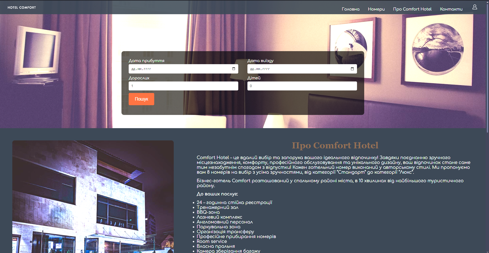
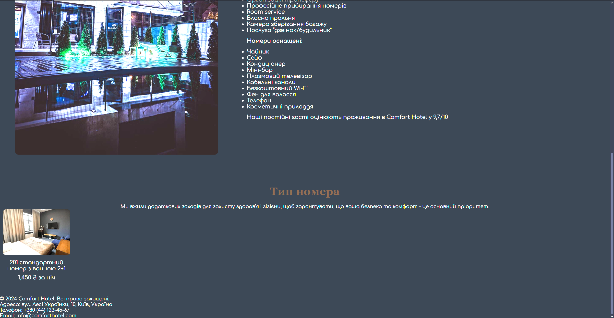
Код html документу
<!DOCTYPE html>
<html lang="uk">
<head>
<meta charset="UTF-8">
<meta name="viewport" content="width=device-width, initial-scale=1.0">
<title>Елітний Готель</title>
<link rel="stylesheet" href="style.css">
<link rel="preconnect" href="https://fonts.googleapis.com">
<link rel="preconnect" href="https://fonts.gstatic.com" crossorigin>
<link href="https://fonts.googleapis.com/css2?family=Comfortaa:wght@300..700&display=swap" rel="stylesheet">
</head>
<body>
<header class="hero">
<!-- Фон зображення для героя -->
<div class="hero-background"></div>
<nav class="top-nav">
<img src="logo.png" alt="Logo" class="logo">
<div class="navigation">
<a href="about.html">Головна</a>
<a href="pricing.html">Номери</a>
<a href="features.html">Про Comfort Hotel</a>
<a href="contact.html">Контакти</a>
<a href="login.html" class="login-button"><img src="user.png" alt="User Icon"></a>
</div>
</nav>
</header>
<main>
<!-- Форма для пошуку -->
<section class="search-form">
<div class="search-container">
<div class="form-field">
<label for="arrival-date">Дата прибуття</label>
<input type="date" id="arrival-date" name="arrival-date">
</div>
<div class="form-field">
<label for="departure-date">Дата виїзду</label>
<input type="date" id="departure-date" name="departure-date">
</div>
<div class="form-field">
<label for="adults">Дорослих</label>
<input type="number" id="adults" name="adults" min="1" value="1">
</div>
<div class="form-field">
<label for="children">Дітей</label>
<input type="number" id="children" name="children" min="0" value="0">
</div>
<div class="form-field search-btn-container">
<button class="search-btn">Пошук</button>
</div>
</div>
</section>
<!-- Опис Comfort Hotel -->
<section class="about-section">
<img src="About.jpg" alt="Про Comfort Hotel" class="about-image">
<div class="about-text">
<h2>Про Comfort Hotel</h2>
<p>Comfort Hotel – це вдалий вибір та запорука вашого ідеального відпочинку!</p>
</div>
</section>
<!-- Карусель тип номерів -->
<section class="room-types">
<h2>Тип номера</h2>
<p>Ми вжили додаткових заходів для захисту здоров’я і гігієни, щоб гарантувати, що ваша безпека та комфорт – це основний пріоритет.</p>
<div class="carousel">
<div class="carousel-item">
<img src="n1.jpg" alt="Номер 201">
<p>201 стандартний номер з ванною 2+1</p>
<p>1,450 ₴ за ніч</p>
</div>
</div>
</section>
</main>
<!-- Footer -->
<footer class="site-footer">
<div class="footer-content">
<p>© 2024 Comfort Hotel. Всі права захищені.</p>
<p>Адреса: вул. Лесі Українки, 10, Київ, Україна</p>
<p>Телефон: +380 (44) 123-45-67</p>
<p>Email: info@comforthotel.com</p>
</div>
</footer>
<script src="script.js"></script>
</body>
</html>
Код CSS
* {
margin: 0;
padding: 0;
box-sizing: border-box;
}
<!-- Основні стилі для body -->
body {
background-color: #212932; /* Колір фону */
color: #ececed; /* Колір тексту */
font-family: 'Comfortaa', Arial, sans-serif; /* Шрифт Comfortaa */
overflow-x: hidden; /* Вимикаємо горизонтальний скрол */
}
<!-- Контейнер для навігації та логотипу -->
.top-nav {
position: relative;
width: 100%;
display: flex; /* Використовуємо Flexbox для вирівнювання елементів */
justify-content: space-between; /* Вирівнюємо елементи по ширині */
align-items: center; /* Вертикальне вирівнювання */
padding: 5px 30px;
background-color: rgba(33, 41, 50, 0.9); /* Прозорий фон */
z-index: 1;
height: 56px;
}
<!-- Логотип -->
.logo {
width: 120px;
height: auto;
object-fit: contain;
}
<!-- Навігаційні посилання -->
.navigation a {
color: #fff;
font-size: 16px;
margin-left: 30px;
text-decoration: none;
}
.navigation a:hover {
color: #c9a66b;
}
<!-- Кнопка входу -->
.login-button img {
width: 30px;
height: 30px;
}
<!-- Герой-блок з відео -->
.hero {
position: relative;
width: 100%;
height: 86vh;
overflow: hidden;
}
#background-video {
object-fit: cover;
width: 100%;
height: 100%;
}
<!-- Секція пошуку -->
.search-form {
position: absolute;
top: 20%;
width: 100%;
display: flex; /* Використовуємо Flexbox для вирівнювання елементів */
justify-content: center; /* Центруємо елементи всередині контейнера */
}
.search-container {
background-color: rgba(0, 0, 0, 0.7);
padding: 30px;
border-radius: 10px;
width: 50%;
display: flex;
flex-wrap: wrap; /* Перехід елементів на новий рядок при нестачі місця */
justify-content: space-between; /* Вирівнювання елементів по ширині */
align-items: center; /* Вертикальне вирівнювання елементів */
}
.form-field {
width: 48%; /* Ширина полів форми */
margin-bottom: 10px;
}
.form-field label {
font-size: 16px;
color: #fff;
}
.form-field input {
width: 100%;
padding: 10px;
font-size: 14px;
margin-top: 5px;
border: none;
border-radius: 5px;
background-color: #f2f2f2;
}
<!-- Кнопка пошуку -->
.search-btn {
background-color: #af4425;
color: #fff;
padding: 15px 25px;
font-size: 18px;
border: none;
border-radius: 5px;
cursor: pointer;
}
.search-btn:hover {
background-color: #662e1c;
}
<!-- Секція про готель -->
.about-section {
display: flex; /* Використовуємо Flexbox для вирівнювання елементів */
justify-content: space-between; /* Вирівнюємо елементи по ширині */
padding: 50px;
}
.about-text {
width: 60%; /* Ширина текстової частини */
}
.about-text h2 {
font-size: 36px;
margin-bottom: 20px;
}
.about-text p, .about-text ul {
font-size: 18px;
margin-bottom: 15px;
}
.about-image {
width: 35%; /* Ширина зображення */
border-radius: 10px;
}
<!-- Секція з каруселлю кімнат -->
.room-types {
text-align: center;
padding: 50px 0;
}
.room-types h2 {
font-size: 36px;
margin-bottom: 20px;
}
.room-types .carousel {
display: flex; /* Використовуємо Flexbox для вирівнювання елементів */
justify-content: space-between; /* Вирівнюємо елементи по ширині */
overflow-x: auto; /* Дозволяємо горизонтальний скрол */
}
.carousel-item {
width: 220px; /* Ширина кожного елемента */
text-align: center;
margin: 0 10px;
}
.carousel-item img {
width: 100%;
height: 150px;
object-fit: cover;
border-radius: 10px;
}
.carousel-item p {
margin-top: 10px;
font-size: 18px;
}
<!-- Герой-блок -->
.hero {
position: relative;
width: 100%;
height: 525px; /* Висота блоку */
overflow: hidden;
}
<!-- Фон зображення -->
.hero-background {
position: absolute;
top: 0;
left: 0;
width: 100%;
height: 100%;
background-image: url('background.jpg'); /* Заміна на ваше зображення */
background-size: cover; /* Покриття всієї області */
background-position: center; /* Центрування зображення */
background-repeat: no-repeat; /* Заборона повторення */
z-index: 0;
filter: brightness(0.8); /* Зменшення яскравості для кращого контрасту */
}
<!-- Навігаційна панель -->
.top-nav {
position: relative; /* Залишаємо у відносному положенні */
z-index: 1; /* Піднімаємо над фоном */
width: 100%;
display: flex; /* Використовуємо Flexbox для вирівнювання елементів */
justify-content: space-between; /* Вирівнюємо елементи по ширині */
align-items: center; /* Вертикальне вирівнювання */
padding: 5px 30px;
background-color: rgba(33, 41, 50, 0.9); /* Прозорий фон */
height: 56px;
}
<!-- Логотип -->
.logo {
width: 120px;
height: auto;
object-fit: contain;
}
<!-- Навігаційні посилання -->
.navigation a {
color: #fff;
font-size: 16px;
margin-left: 30px;
text-decoration: none;
}
.navigation a:hover {
color: #c9a66b;
}
<!-- Кнопка входу -->
.login-button img {
width: 30px;
height: 30px;
}
<!-- Стиль для заголовка всередині section -->
section h2 {
font-family: 'Georgia', serif;
font-size: 2em;
color: #5A4231;
text-align: center;
margin-bottom: 10px;
}
Завдання 2
Засобами HTML та CSS виконати Завдання №2, в саме: створити окремі веб-сторінки, а саме:
• Розмітку за допомогою таблиці (номер варіанта – остання цифра у списку групи)
o Фіксована таблична верстка
o Гумова таблична верстка
• Розмітку за допомогою блоків (плаваючих елементів) (номер варіанта – остання цифра у списку групи + 1)
o Фіксована блокова верстка
o Гумова блокова верстка
1.1 Фіксована таблична верстка
<!DOCTYPE html>
<html lang="uk">
<head>
<meta charset="UTF-8">
<meta name="viewport" content="width=device-width, initial-scale=1.0">
<title>Фіксована Таблична Верстка</title>
<style>
table {
width: 500px;
height: 400px;
border-collapse: collapse;
}
td {
border: 1px solid black;
text-align: center;
}
.header { background-color: yellow; }
.sidebar { background-color: blue; }
.content { background-color: white; }
.extra { background-color: red; }
.footer { background-color: yellow; }
</style>
</head>
<body>
<table>
<tr>
<td class="header" colspan="2">1</td>
</tr>
<tr>
<td class="sidebar" rowspan="2">2</td>
<td class="extra">4</td>
</tr>
<tr>
<td class="content">3</td>
</tr>
<tr>
<td class="footer" colspan="2">5</td>
</tr>
</table>
</body>
</html>
1.2 Гумова таблична верстка
<!DOCTYPE html>
<html lang="uk">
<head>
<meta charset="UTF-8">
<meta name="viewport" content="width=device-width, initial-scale=1.0">
<title>Гумова Таблична Верстка</title>
<style>
table {
width: 100%;
height: 100vh;
border-collapse: collapse;
}
td {
border: 1px solid black;
text-align: center;
}
.header { background-color: yellow; }
.sidebar { background-color: blue; }
.content { background-color: white; }
.extra { background-color: red; }
.footer { background-color: yellow; }
</style>
</head>
<body>
<table>
<tr>
<td class="header" colspan="2">1</td>
</tr>
<tr>
<td class="sidebar" rowspan="2">2</td>
<td class="extra">4</td>
</tr>
<tr>
<td class="content">3</td>
</tr>
<tr>
<td class="footer" colspan="2">5</td>
</tr>
</table>
</body>
</html>
2.1 Фіксована блокова верстка
<!DOCTYPE html>
<html lang="uk">
<head>
<meta charset="UTF-8">
<meta name="viewport" content="width=device-width, initial-scale=1.0">
<title>Фіксована Блокова Верстка</title>
<style>
.container {
width: 500px;
height: 400px;
position: relative;
margin: 0 auto;
border: 1px solid black;
}
.header, .footer { background-color: yellow; text-align: center; }
.header { height: 50px; }
.footer { height: 50px; }
.sidebar { background-color: blue; float: left; width: 100px; height: 300px; }
.content { background-color: white; float: left; width: 200px; height: 200px; }
.extra { background-color: red; float: left; width: 100px; height: 50px; }
</style>
</head>
<body>
<div class="container">
<div class="header">1</div>
<div class="sidebar">2</div>
<div class="extra">4</div>
<div class="content">3</div>
<div class="footer">5</div>
</div>
</body>
</html>
2.2 Гумова блокова верстка
<!DOCTYPE html>
<html lang="uk">
<head>
<meta charset="UTF-8">
<meta name="viewport" content="width=device-width, initial-scale=1.0">
<title>Гумова Блокова Верстка</title>
<style>
.container {
width: 90%;
height: 90vh;
position: relative;
margin: 0 auto;
border: 1px solid black;
}
.header, .footer { background-color: yellow; text-align: center; }
.header { height: 10%; }
.footer { height: 10%; }
.sidebar { background-color: blue; float: left; width: 20%; height: 80%; }
.content { background-color: white; float: left; width: 50%; height: 60%; }
.extra { background-color: red; float: left; width: 30%; height: 20%; }
</style>
</head>
<body>
<div class="container">
<div class="header">1</div>
<div class="sidebar">2</div>
<div class="extra">4</div>
<div class="content">3</div>
<div class="footer">5</div>
</div>
</body>
</html>
Завдання 2. Варіант (12) = 2
<!DOCTYPE html>
<html lang="uk">
<head>
<meta charset="UTF-8">
<meta name="viewport" content="width=device-width, initial-scale=1.0">
<title>Макет: Варіант 2</title>
<style>
body {
margin: 0;
font-family: Arial, sans-serif;
}
.container {
width: 100%;
max-width: 1200px;
margin: 0 auto;
overflow: hidden; /* Забезпечує коректне відображення плаваючих блоків */
}
/* Верхній блок */
.header {
background-color: #ffc107; /* Жовтий фон */
height: 100px;
line-height: 100px; /* Вертикальне вирівнювання тексту */
text-align: center; /* Центрування тексту */
font-size: 24px;
font-weight: bold;
}
/* Ліва панель */
.left-sidebar {
background-color: #007bff; /* Синій фон */
width: 20%; /* Ширина 20% від контейнера */
float: left; /* Використання float для розташування */
height: 400px;
color: white;
text-align: center;
padding-top: 20px; /* Відступ зверху для тексту */
}
/* Центральний блок */
.main-content {
background-color: #ffffff; /* Білий фон */
width: 40%; /* Ширина 40% від контейнера */
float: left; /* Використання float для розташування */
height: 400px;
border: 1px solid #ddd; /* Сіра рамка */
box-sizing: border-box;
padding: 20px;
}
/* Права панель */
.right-sidebar {
background-color: #007bff; /* Синій фон */
width: 20%; /* Ширина 20% від контейнера */
float: left; /* Використання float для розташування */
height: 400px;
color: white;
text-align: center;
padding-top: 20px; /* Відступ зверху для тексту */
}
/* Нижній блок */
.footer {
background-color: #ffc107; /* Жовтий фон */
height: 100px;
clear: both; /* Забезпечує, що цей блок відображається під усіма float */
text-align: center; /* Центрування тексту */
line-height: 100px;
font-size: 20px;
font-weight: bold;
}
/* Червоний блок у Центрі */
.top-bar {
background-color: #dc3545; /* Червоний фон */
height: 50px;
width: 90%; /* Займає 90% ширини центрального блоку */
margin: 0 auto;
text-align: center; /* Центрування тексту */
color: white;
line-height: 50px;
margin-bottom: 20px; /* Відступ знизу */
}
</style>
</head>
<body>
<div class="container">
<!-- Верхній блок -->
<div class="header">1. Верхній блок: заголовок сторінки</div>
<!-- Ліва панель -->
<div class="left-sidebar">2. Ліва панель: додаткове меню</div>
<!-- Центральний блок -->
<div class="main-content">
<div class="top-bar">Червоний блок: важлива інформація</div>
3. Центральний блок: основний контент сторінки
</div>
<!-- Права панель -->
<div class="right-sidebar">4. Права панель: додаткові функції</div>
<!-- Нижній блок -->
<div class="footer">5. Нижній блок: підвал сторінки</div>
</div>
</body>
</html>
Порівняння таблиць та блоків
| Параметр |
Таблиці |
Плаваючі блоки |
| Гнучкість дизайну |
Обмежена, важко адаптувати до різних розмірів екранів |
Висока, легко створювати адаптивні дизайни |
| Простота реалізації |
Легко створювати структури таблиць |
Потребує більше налаштувань і CSS |
| Сумісність |
Широко підтримується у всіх браузерах |
Підтримується, але потребує додаткової роботи для старих браузерів |
| Застосування |
Підходить для відображення табличних даних |
Підходить для створення сучасних дизайнів |
Переваги таблиць
- Легкість у використанні для табличних даних
- Чітка структура і форматування
- Широка підтримка у всіх браузерах
Переваги блоків
- Гнучкість у створенні дизайну
- Можливість адаптації до різних пристроїв
- Сучасний підхід до розробки веб-додатків
Завдання 3. Варіант (12) = 2. Виконати Завдання №3, використовуючи засоби CSS та FLEXBOX
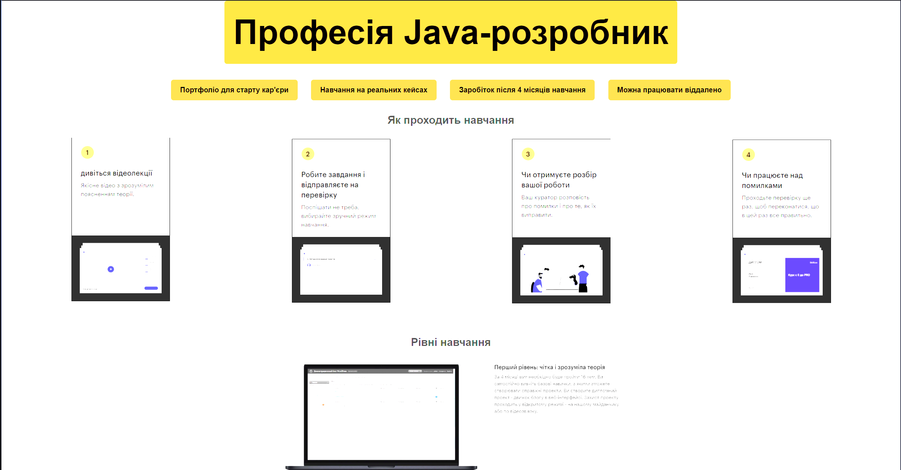
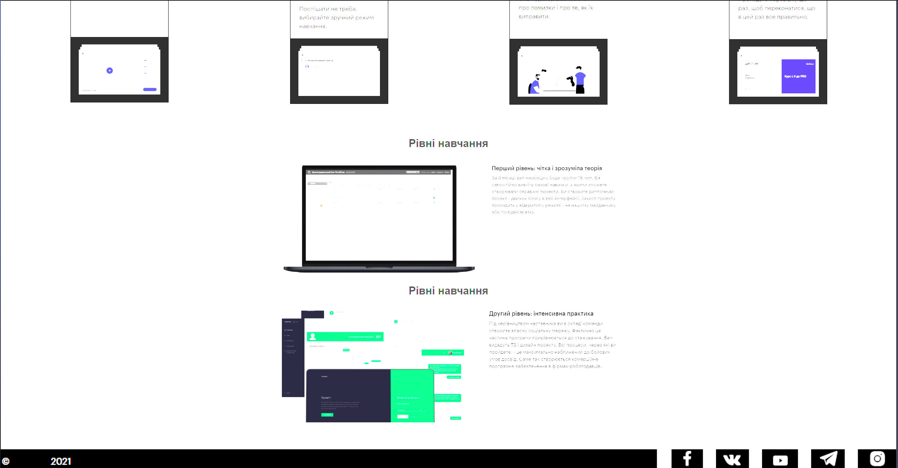
<!DOCTYPE html>
<html lang="uk">
<head>
<meta charset="UTF-8">
<meta name="viewport" content="width=device-width, initial-scale=1.0">
<title>Професія Java-розробник</title>
<link rel="stylesheet" href="style.css">
</head>
<body>
<header class="header">
<div class="header-background">
<h1>Професія Java-розробник</h1>
</div>
<div class="features">
<a href="#portfolio" class="feature-btn">Портфоліо для старту кар'єри</a>
<a href="#real-cases" class="feature-btn">Навчання на реальних кейсах</a>
<a href="#earnings" class="feature-btn">Заробіток після 4 місяців навчання</a>
<a href="#remote" class="feature-btn">Можна працювати віддалено</a>
</div>
</header>
<section class="steps">
<h2>Як проходить навчання</h2>
<div class="step-list">
<div class="step">
<img src="11.png" alt="Крок 1">
</div>
<div class="step">
<img src="22.png" alt="Крок 2">
</div>
<div class="step">
<img src="33.png" alt="Крок 3">
</div>
<div class="step">
<img src="44.png" alt="Крок 4">
</div>
</div>
</section>
<section class="levels">
<h1>Рівні навчання</h1>
<div class="level-images">
<img src="1.png" alt="Перший рівень" class="level">
<h1>Рівні навчання</h1>
<img src="2.png" alt="Другий рівень" class="level">
</div>
</section>
<footer class="footer">
<span class="year">2021</span>
</footer>
</body>
</html>
<style>
* {
margin: 0;
padding: 0;
box-sizing: border-box;
}
body {
font-family: Arial, sans-serif;
line-height: 1.6;
color: #333;
}
.header {
text-align: center;
}
.header-background {
background-color: #e58f26; /* Темніший відтінок помаранчевого */
padding: 10px 20px;
display: inline-block; /* Фігура буде тільки під текстом */
border-radius: 5px; /* Заокруглені краї */
margin-bottom: 20px; /* Відступ після цього блоку */
}
.header-background h1 {
margin: 0;
font-size: 75px;
color: rgb(0, 0, 0);
font-weight: bold;
text-align: center;
white-space: nowrap; /* Запобігає переносу тексту */
}
.features {
display: flex;
justify-content: center;
gap: 20px;
margin-top: 10px;
}
.feature-btn {
background-color: #d48c2f; /* Помаранчевий фон */
color: rgb(0, 0, 0);
text-decoration: none; /* Прибираємо підкреслення */
padding: 10px 20px; /* Відступи */
font-weight: bold;
border-radius: 5px; /* Заокруглені краї */
transition: background-color 0.3s ease; /* Плавний перехід кольору */
display: inline-block;
margin: 5px;
}
.feature-btn:hover {
background-color: #a96b1a; /* Трохи темніший колір при наведенні */
}
.steps {
margin: 20px;
text-align: center;
}
.steps .step-list {
display: flex;
justify-content: space-between;
gap: 2px; /* Зменшено відстань між картинками */
margin-top: 20px;
}
.step {
text-align: center;
flex: 1;
}
.step img {
width: 220px; /* Зменшено розмір картинок для кроків */
height: auto;
}
.levels {
margin: 60px;
text-align: center;
}
.level-images {
display: flex;
flex-direction: column; /* Картинки розташовані одна під одною */
gap: 20px; /* Відстань між картинками */
align-items: center;
}
.level {
width: 40%; /* Зменшено ширину для картинок рівнів */
height: auto;
}
.footer {
background-image: url('footer.png'); /* Ваша фотографія */
background-size: cover; /* Розтягнення фотографії на всю ширину */
background-position: center; /* Центрування фотографії */
height: 43px; /* Висота футера, яку можна коригувати за потребою */
color: rgb(0, 0, 0);
text-align: center;
display: flex;
align-items: center;
justify-content: center;
position: relative;
}
.year {
font-size: 20px;
font-weight: bold;
position: absolute;
bottom: 10px; /* Розташування тексту внизу футера */
left: 50%;
transform: translateX(-50%);
}
/* Стилі для кнопок */
.feature-btn {
background-color: #d48c2f; /* Помаранчевий фон */
color: rgb(0, 0, 0);
text-decoration: none; /* Прибираємо підкреслення */
padding: 10px 20px; /* Відступи */
font-weight: bold;
border-radius: 5px; /* Заокруглені краї */
transition: background-color 0.3s ease; /* Плавний перехід кольору */
display: inline-block;
margin: 5px;
}
.feature-btn:hover {
background-color: #a46616; /* Трохи темніший колір при наведенні */
}
</style>
Загальні підсумки
Створення цього вебсайту за допомогою HTML і CSS демонструє основні
принципи та техніки сучасної веб-розробки. В основі проекту лежить використання
семантичного HTML для побудови структури контенту і адаптивного CSS, що дозволяє
створювати зручний, візуально привабливий та ефективний інтерфейс.
- Використання Flexbox для організації елементів таким чином, щоб вони коректно
відображалися
на різних пристроях.
- Застосування ефектів з напівпрозорими елементами, що надають глибини і об'єму.
- Організація коду відповідно до принципів DRY (Не повторюй себе) для зручності
подальшого
розвитку та підтримки.
- Розподіл стилів на загальні та індивідуальні для кожної секції для покращення читабельності та
повторного
використання.
- Впровадження випадаючих меню для полегшення навігації по сайту.
Сайт відповідає основним стандартам веб-розробки, зокрема таким як адаптивність,
доступність,
зручність для користувачів, і має потенціал для подальших вдосконалень.
Запитання для самоперевірки
-
Які три основні концепції лежать в основі всіх методів верстки сторінок за допомогою
CSS?
Основні принципи верстки включають такі поняття:
- Потік документа: природний порядок розташування елементів на сторінці.
- Моделі блоку та стрічки: визначають, як елементи займають простір на
сторінці.
- Позиціювання: дозволяє розташувати елементи відносно інших блоків або
координат.
-
Що таке фіксовані макети веб-сторінок? Їх переваги та недоліки.
Фіксований макет: елементи мають визначену ширину в пікселях і не змінюються при
зміні розміру
вікна.
Переваги: точний контроль над виглядом і простота розробки.
Недоліки: погана адаптивність для різних екранних розмірів, складнощі на
мобільних пристроях.
-
Що таке гумові макети веб-сторінок? Їх переваги та недоліки.
Гумовий макет: ширина елементів визначається у відсотках і змінюється в
залежності від ширини
вікна.
Переваги: краща адаптація до різних пристроїв.
Недоліки: можливі проблеми з читабельністю при дуже великих або малих екранах.
-
Що таке еластичні макети веб-сторінок? Їх переваги та недоліки.
Еластичний макет: елементи мають ширину, що залежить від відносних одиниць
вимірювання, таких як
em.
Переваги: хороша гнучкість, зокрема при зміні розміру шрифтів.
Недоліки: складніше налаштувати пропорції між елементами на сторінці.
-
Що таке адаптивні макети веб-сторінок? Їх переваги та недоліки.
Адаптивний макет: використовує медіазапити CSS для налаштування стилів під різні
типи екранів.
Переваги: зручність використання на різних пристроях та повний контроль за
відображенням.
Недоліки: складність розробки та налаштування.
-
Що таке комбіновані макети веб-сторінок? Їх переваги та недоліки.
Комбінований макет: поєднує принципи фіксованих, гумових та адаптивних макетів.
Переваги: універсальність і зручність для різних пристроїв.
Недоліки: збільшена складність при розробці.
-
Як використовувати HTML і CSS для створення веб-сторінки з таблицями?
Для структурування макету використовують тег <table>, а стилізація таблиць
здійснюється за
допомогою CSS. Однак цей метод вже є застарілим для верстки.
-
Як створити веб-сторінку за допомогою плаваючих елементів у HTML та CSS?
Використовується властивість CSS float для розміщення елементів. Очищення плаваючих
блоків
здійснюється через clear: both. Це менш популярний метод порівняно з новими
підходами, такими як
Flexbox та Grid.
Десктопна версія
Десктопна версія оптимізована для екранів шириною понад 1024px.
Для десктопних версій застосовується простора структура макета з центральним розміщенням контенту,
стандартними розмірами шрифтів та значними проміжками між елементами.
/* Адаптація для екранів шириною від 1024px */
@media (min-width: 1024px) {
body {
max-width: 1200px; /* Обмеження максимальної ширини */
margin: 0 auto; /* Центрування контенту */
font-size: 16px; /* Стандартний розмір шрифту */
}
.sidebar {
width: 250px; /* Ширина бокового меню */
}
.content-section.active {
width: 80%; /* Центральний контент займає більшу частину */
}
}
Планшетна версія
Планшетна версія оптимізована для ширини екранів від 768px до 1024px.
Для планшетів застосовується оптимізована структура макета, що дозволяє забезпечити зручне відображення
контенту з адекватним розміром шрифтів та помірними відстанями між елементами.
/* Адаптація для екранів шириною від 768px до 1024px */
/* Зменшено розміри шрифтів і перерозподілені елементи для зручності на планшетах */
@media (min-width: 768px) and (max-width: 1024px) {
body {
max-width: 960px; /* Максимальна ширина контенту */
margin: 0 auto; /* Центрування контенту */
font-size: 14px; /* Помірний розмір шрифтів */
}
.header-text {
font-size: 1.4em; /* Трошки зменшений шрифт для заголовку */
}
.sidebar {
width: 200px; /* Зменшена ширина бічного меню */
}
.main-content {
flex-direction: column; /* Перехід до вертикального розташування контенту */
}
.screen-img {
max-width: 100%; /* Ширина картинки адаптується до ширини екрану */
}
}
Мобільна версія
Мобільна версія розроблена для ширини екранів менше 768px.
Для мобільних пристроїв застосовується компактний макет, який дозволяє забезпечити зручне переглядання
контенту на маленьких екранах,
з меншими відстанями між елементами і оптимізованими шрифтами.
/* Адаптація для екранів шириною до 768px */
/* Збільшено простір між елементами і зменшено розміри шрифтів */
@media (max-width: 768px) {
body {
max-width: 100%; /* Контент на весь екран */
font-size: 12px; /* Зменшений розмір шрифтів */
}
.header-text {
font-size: 1.2em; /* Зменшення шрифту заголовка */
}
.sidebar {
width: 100%; /* Бічна панель стає повною шириною */
margin-top: 20px; /* Відступ зверху для відокремлення */
}
.main-content {
flex-direction: column; /* Вертикальне розташування контенту */
}
.screen-img {
max-width: 100%; /* Зображення розтягується на весь екран */
margin-bottom: 10px; /* Відступ від зображення */
}
}
Методика адаптивної верстки
Для створення адаптивного дизайну були використані два ключові брейкпоінти: 768px та
1024px.
Кожен з цих екранів має спеціально розроблені стилі, що дозволяють досягти найкращого досвіду
користувача на різних пристроях.
Основні принципи адаптації:
- Розширене використання великих шрифтів і значних відступів для великих екранів десктопів.
- Перегляд і коригування відстаней та розмірів елементів для зручності використання на планшетах.
- Компактність і максимальна спрощеність для користувачів мобільних пристроїв.
Використання логічних операторів
Під час розробки адаптивної верстки для точного налаштування медіа-запитів були застосовані логічні
оператори
and та not. Ці оператори дозволяють детальніше контролювати умови застосування
стилів залежно від розміру екрану:
/* Застосування логічних операторів */
@media not all and (max-width: 600px) {
header {
background-color: #f4f4f4;
}
}
Висновки до лабораторної роботи №4
-
Розробка адаптивної верстки:
У процесі лабораторної роботи була розроблена адаптивна верстка для трьох основних типів
пристроїв: десктопів, планшетів та мобільних телефонів. Використання медіа-запитів дозволило
створити відповідні стилі для кожного типу екрану, забезпечуючи комфортне використання сайту на
різних пристроях.
-
Десктопна версія:
Верстка для екранів понад 1024px була орієнтована на зручне розміщення елементів, оптимальну
ширину контейнерів і чітке відображення шрифтів для покращеної читабельності на великих екранах.
-
Планшетна версія:
Для екранів від 768px до 1024px були створені стилі, що сприяють компактнішому розташуванню
елементів, забезпечуючи зручну навігацію та адаптацію меню та контенту для середніх розмірів
екранів.
-
Мобільна версія:
Для пристроїв з екранами до 768px був використаний спрощений дизайн, з акцентом на швидке
завантаження сторінки та зручне відображення контенту на невеликих екранах, за рахунок
мінімізації елементів.
-
Використання логічних операторів:
У процесі налаштування медіа-запитів застосовувались логічні оператори and і
not, що дозволили точніше визначити умови застосування стилів для різних пристроїв,
покращуючи адаптивність дизайну.
-
Висновок:
Отримані навички та знання з адаптивної верстки дозволяють створювати сучасні веб-сторінки, що
відповідають вимогам користувачів різних пристроїв. Застосування медіа-запитів і логічних
операторів забезпечує високу гнучкість дизайну і функціональність для будь-якого екрану.
Тема:ФУНКЦІОНАЛЬНЕ ЗАСТОСУВАННЯ JAVASCRIPT У HTML-ДОКУМЕНТІ. ВИКОРИСТАННЯ МАСИВІВ У
JS-СЦЕНАРІЯХ. РЕАЛІЗАЦІЯ ПРОГРАМ ЗАСОВАМИ МОВИ JAVASCRIPT
Мета:придбати практичні навички роботи з конструкціями мови JS, масивами та
фугкціями у js-сценаріях. Реалізація програм засовами мови JAVASCRIPT
Посилання на живу веб-сторінку
Посилання на веб-сторінку
Посилання на живу сторінку звітного HTML документа
Посилання на сторінку звітного HTML документа
Посилання на живу сторінку з самостійними роботами
Посилання на сторінку з самостійними роботами
Завдання №1. Варіант 2
<!DOCTYPE html>
<html lang="en">
<head>
<meta charset="UTF-8">
<meta name="viewport" content="width=device-width, initial-scale=1.0">
<title>Test JavaScript</title>
</head>
<body>
<script>
function getShippingMessage(country, price, deliveryFee) {
const totalPrice = price + deliveryFee;
return `Shipping to ${country} will cost ${totalPrice} credits`;
}
// Перевірка функції
console.log(getShippingMessage("USA", 100, 20));
</script>
</body>
</html>
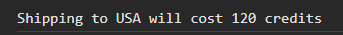
Завдання №2.Варіант 2
<!DOCTYPE html>
<html lang="en">
<head>
<meta charset="UTF-8">
<meta name="viewport" content="width=device-width, initial-scale=1.0">
<title>Transaction Test</title>
</head>
<body>
<h1>Transaction Test</h1>
<p>Результати роботи функції відображатимуться нижче:</p>
<div id="results"></div>
<script>
function makeTransaction(quantity, pricePerDroid, customerCredits) {
const totalPrice = quantity * pricePerDroid;
if (totalPrice > customerCredits) {
return "Insufficient funds!";
} else {
return `You ordered ${quantity} droids, and ${totalPrice} is their total cost!`;
}
}
// Тестові виклики функції
const result1 = makeTransaction(5, 100, 600);
const result2 = makeTransaction(10, 50, 400);
const result3 = makeTransaction(3, 200, 1000);
// Виведення результатів на сторінку
const resultsDiv = document.getElementById('results');
resultsDiv.innerHTML = `
<p>${result1}</p>
<p>${result2}</p>
<p>${result3}</p>
`;
</script>
</body>
</html>
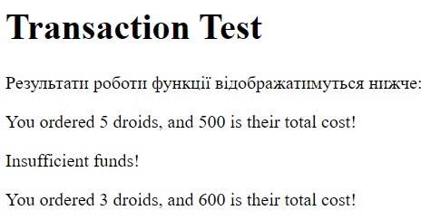
Завдання №3.Варіант 2
<!DOCTYPE html>
<html lang="en">
<head>
<meta charset="UTF-8">
<meta name="viewport" content="width=device-width, initial-scale=1.0">
<title>Array Merge Test</title>
</head>
<body>
<h1>Array Merge Test</h1>
<p>Результати роботи функції відображатимуться нижче:</p>
<div id="results"></div>
<script>
function makeArray(firstArray, secondArray, maxLength) {
// Об'єднуємо обидва масиви
const combinedArray = [...firstArray, ...secondArray];
// Перевіряємо, чи довжина комбінованого масиву перевищує maxLength
if (combinedArray.length > maxLength) {
// Повертаємо копію масиву з довжиною maxLength
return combinedArray.slice(0, maxLength);
} else {
// Повертаємо весь комбінований масив
return combinedArray;
}
}
// Тестові виклики функції
const result1 = makeArray([1, 2, 3], [4, 5, 6], 5);
const result2 = makeArray([1, 2], [3, 4, 5, 6], 10);
const result3 = makeArray([1, 2], [3, 4], 3);
// Виведення результатів на сторінку
const resultsDiv = document.getElementById('results');
resultsDiv.innerHTML = `
<p>Result 1: [${result1}]</p>
<p>Result 2: [${result2}]</p>
<p>Result 3: [${result3}]</p>
`;
</script>
</body>
</html>
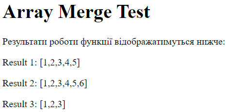
Завдання №4.Варіант 2
Підпункт 1
<!DOCTYPE html>
<html lang="uk">
<head>
<meta charset="UTF-8">
<meta name="viewport" content="width=device-width, initial-scale=1.0">
<title>Операції з масивом</title>
</head>
<body>
<h1>Операції з масивом</h1>
<p>Результати операцій з масивом відображатимуться нижче:</p>
<div id="results"></div>
<script>
// Функція для створення масиву та виконання операцій
function arrayOperations() {
// Крок 1: Створення масиву
const arrayLength = parseInt(prompt("Введіть кількість елементів масиву:"));
const array = [];
for (let i = 0; i < arrayLength; i++) {
array.push(parseInt(prompt("Введіть елемент " + (i + 1) + ":")));
}
// Сума елементів з парними індексами
let evenSum = 0;
for (let i = 0; i < array.length; i += 2) {
evenSum += array[i];
}
// Максимальний елемент і його індекс серед елементів з непарними індексами
let maxOddValue = -Infinity;
let maxOddIndex = -1;
for (let i = 1; i < array.length; i += 2) {
if (array[i] > maxOddValue) {
maxOddValue = array[i];
maxOddIndex = i;
}
}
// Мінімальний елемент і його індекс серед елементів з непарними індексами
let minOddValue = Infinity;
let minOddIndex = -1;
for (let i = 1; i < array.length; i += 2) {
if (array[i] < minOddValue) {
minOddValue = array[i];
minOddIndex = i;
}
}
// Виведення результатів
const resultsDiv = document.getElementById("results");
resultsDiv.innerHTML = `
<p>Вхідний масив: [${array}]</p>
<p>Сума елементів з парними індексами: ${evenSum}</p>
<p>Максимальний елемент серед непарних індексів: ${maxOddValue} на індексі ${maxOddIndex}</p>
<p>Мінімальний елемент серед непарних індексів: ${minOddValue} на індексі ${minOddIndex}</p>
`;
// Крок 2: Упорядкування масиву та виведення результату
const sortedArray = [...array].sort((a, b) => a - b); // Сортуємо масив за зростанням
resultsDiv.innerHTML += `
<p>Відсортований масив: [${sortedArray}]</p>
`;
}
// Викликаємо функцію для обробки масиву
arrayOperations();
</script>
</body>
</html>
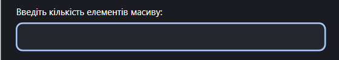
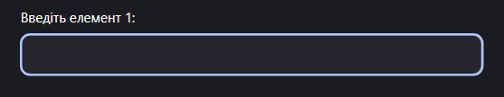
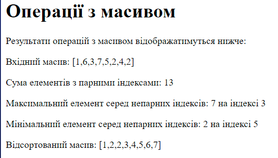
Завдання №5. Варіант 2
<!DOCTYPE html>
<html lang="uk">
<head>
<meta charset="UTF-8">
<meta name="viewport" content="width=device-width, initial-scale=1.0">
<title>Багаторівневе меню</title>
<style>
/* Стиль для горизонтального меню */
.horizontal-menu {
list-style-type: none;
padding: 0;
margin: 0;
display: flex;
}
.horizontal-menu li {
margin: 0 15px;
position: relative;
}
.horizontal-menu a {
text-decoration: none;
color: #333;
padding: 10px 20px;
display: block;
}
/* Стиль для вертикального меню */
.vertical-menu {
list-style-type: none;
padding: 0;
margin: 0;
width: 200px;
}
.vertical-menu li {
margin-bottom: 10px;
}
.vertical-menu a {
text-decoration: none;
color: #333;
padding: 10px 20px;
display: block;
}
/* Підменю */
.submenu {
list-style-type: none;
display: none;
position: absolute;
top: 0;
left: 200px;
background-color: #f1f1f1;
min-width: 160px;
}
.horizontal-menu li:hover .submenu {
display: block;
}
</style>
</head>
<body>
<h1>Багаторівневе меню</h1>
<ul class="horizontal-menu" id="horizontal-menu">
</ul>
<ul class="vertical-menu" id="vertical-menu">
</ul>
<div id="content">
</div>
<script>
// Статичний масив для пунктів меню
const menuItems = [
{ title: 'Головна', link: 'index.html' },
{
title: 'Послуги',
link: '#',
submenu: [
{ title: 'Ремонт', link: 'service-repair.html' },
{ title: 'Консультації', link: 'service-consultation.html' }
]
},
{ title: 'Про нас', link: 'about-us.html' },
{ title: 'Контакти', link: 'contact.html' }
];
// Функція для створення горизонтального меню
function createHorizontalMenu() {
const menu = document.getElementById('horizontal-menu');
menuItems.forEach(item => {
const li = document.createElement('li');
const a = document.createElement('a');
a.href = item.link;
a.textContent = item.title;
li.appendChild(a);
if (item.submenu) {
const subMenu = document.createElement('ul');
subMenu.className = 'submenu';
item.submenu.forEach(subItem => {
const subLi = document.createElement('li');
const subA = document.createElement('a');
subA.href = subItem.link;
subA.textContent = subItem.title;
subLi.appendChild(subA);
subMenu.appendChild(subLi);
});
li.appendChild(subMenu);
}
menu.appendChild(li);
});
}
// Функція для створення вертикального меню
function createVerticalMenu() {
const menu = document.getElementById('vertical-menu');
menuItems.forEach(item => {
const li = document.createElement('li');
const a = document.createElement('a');
a.href = item.link;
a.textContent = item.title;
li.appendChild(a);
if (item.submenu) {
const subMenu = document.createElement('ul');
subMenu.className = 'submenu';
item.submenu.forEach(subItem => {
const subLi = document.createElement('li');
const subA = document.createElement('a');
subA.href = subItem.link;
subA.textContent = subItem.title;
subLi.appendChild(subA);
subMenu.appendChild(subLi);
});
li.appendChild(subMenu);
}
menu.appendChild(li);
});
}
// Викликаємо функції для створення меню
createHorizontalMenu();
createVerticalMenu();
</script>
</body>
</html>
Приклад
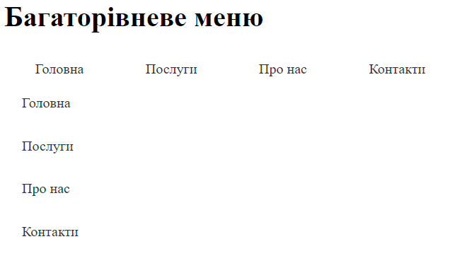
Висновки
1. Робота з функціями в JavaScript:
- Усі задачі передбачали написання функцій для виконання різних операцій. Від простих математичних обчислень (як у випадку з підрахунком вартості доставки) до більш складних операцій, таких як обробка масивів або створення динамічних елементів на сторінці.
- Важливим етапом було правильно розуміти та використовувати функціональні можливості мови JavaScript, зокрема робота з параметрами функцій, умовними операторами, масивами та маніпулювання DOM-елементами.
2. Робота з масивами та обробка даних:
- Одна з важливих задач полягала в роботі з масивами, де потрібно було маніпулювати даними, знаходити максимальні/мінімальні елементи, сортувати масиви та створювати нові масиви на основі заданих умов.
- Завдання показали важливість знань про основні методи роботи з масивами (наприклад, `.push()`, `.sort()`, `.reduce()`, `.map()`) і необхідність правильно обробляти помилки та виключення.
3. Інтерактивність і динамічність на сайті:
- Декілька задач включали створення динамічних елементів, таких як багаторівневе меню. Це дозволяє не лише організувати функціональність сайту, але й забезпечити зручний інтерфейс для користувачів.
- Взаємодія з користувачем через події, такі як натискання на пункти меню або інші елементи, стала важливою частиною реалізації.
4. Адаптивність та інтеграція з HTML і CSS:
- Завдання включали необхідність інтеграції JavaScript із HTML для динамічного створення контенту (наприклад, меню, яке будується на основі масиву). Це дозволяє значно зекономити час на зміні структури сайту, не вносячи вручну зміни в HTML.
- Використання CSS для стилізації меню, масивів та інших елементів сайту забезпечує його естетичний вигляд та адаптивність до різних екранів.
5. Робота з подіями та взаємодією з користувачем:
- У багатьох завданнях йшлося про взаємодію з користувачем через події, як-от натискання на кнопки, пункти меню тощо. Це показує, як важливо вміти ефективно використовувати обробники подій, щоб зробити веб-додатки більш інтерактивними та зручними.
6. Аналіз помилок і покращення коду:
- Протягом виконання завдань виникали помилки, такі як неправильне використання синтаксису або логічні помилки, наприклад, у визначенні умов. Це стало хорошою практикою для покращення навичок дебагінгу.
- Також були зроблені покращення коду, наприклад, додавання більше перевірок та умов для коректної обробки даних і підтримки гнучкості та стабільності функцій.
7. Перспективи для розвитку:
- Під час виконання задач були розглянуті основи роботи з JavaScript, масивами, функціями, обробкою подій та маніпуляцією DOM. У майбутньому можна розширити ці знання, працюючи з більш складними бібліотеками та фреймворками (наприклад, React або Vue), що дозволяє ще ефективніше та масштабніше створювати веб-додатки.
- Також можна глибше зануритися в теми асинхронності в JavaScript, обробки запитів до серверу (через `fetch` або `XMLHttpRequest`), а також вивчити більш складні методи маніпуляції DOM.
Загальний висновок:
Протягом виконання завдань були отримані практичні навички роботи з JavaScript, HTML та CSS, що включає створення функцій для обробки даних, динамічну маніпуляцію елементами DOM і створення інтерфейсів, які інтерактивно реагують на дії користувачів. Ці навички є основою для подальшої роботи з веб-розробкою, дозволяючи створювати зручні та ефективні веб-додатки.
Ця лабораторна робота допомогла покращити навички валідації даних та взаємодії з користувачем через
форми.
Тема: Методи об'єкта. Масив об'єктів. Деструктуризація об'єктів. Сallback. Стрілочні функції. Стрілочні функції як колбеки.
Мета: Придбати практичні навички роботи з об'єктами. Методи об'єкта.. Callback. Стрілочні функції. Стрілочні функції як колбеки. Реалізація програм засовами мови JAVASCRIPT
Посилання на живу веб-сторінку
Посилання на веб-сторінку
Посилання на живу сторінку звітного HTML документа
Посилання на сторінку звітного HTML документа
Посилання на живу сторінку з самостійними роботами
Посилання на сторінку з самостійними роботами
Завдання 2
function getProductDetails(productId, successCallback, errorCallback) {
// Симульовані дані про товари
const products = [
{ id: 1, name: 'Repair Droid', price: 100, description: 'A helpful droid for repairs.' },
{ id: 2, name: 'Astromech Droid', price: 200, description: 'A versatile astromech droid.' },
{ id: 3, name: 'Protocol Droid', price: 300, description: 'A diplomatic protocol droid.' }
];
// Знаходимо товар за заданим ідентифікатором
const product = products.find(item => item.id === productId);
if (product) {
// Якщо товар знайдений, викликаємо successCallback і передаємо товар
successCallback(product);
} else {
// Якщо товар не знайдений, викликаємо errorCallback з повідомленням
errorCallback('Product not found!');
}
}
// Приклад використання функції:
// Колбек для успішного отримання даних
function handleSuccess(product) {
console.log('Product found:', product);
}
// Колбек для обробки помилки
function handleError(message) {
console.log('Error:', message);
}
// Виклик функції з ідентифікатором товару
getProductDetails(2, handleSuccess, handleError); // Товар знайдений
getProductDetails(4, handleSuccess, handleError); // Товар не знайдений
Опис функції:
Вхідні параметри:
productId: Ідентифікатор товару, для якого потрібно отримати деталі.
successCallback: Функція, яка буде викликана, якщо товар знайдений. Їй буде переданий об'єкт товару.
errorCallback: Функція, яка буде викликана, якщо товар не знайдений. Їй буде передано повідомлення про помилку.
Логіка:
Функція спочатку перевіряє, чи є товар з вказаним productId в масиві products.
Якщо товар знайдений, викликається successCallback з передачею даних про товар.
Якщо товар не знайдений, викликається errorCallback з повідомленням про помилку.
Приклад виклику:
У прикладі вище, при виклику getProductDetails(2, handleSuccess, handleError), товар з ідентифікатором 2 знайдеться і буде передано в handleSuccess, вивівши в консоль інформацію про товар. Для виклику з ідентифікатором 4, якого немає в масиві, буде викликано handleError з повідомленням про помилку.
Завдання 4
const concerts = {
Київ: new Date("2020-04-01"),
Умань: new Date("2025-07-02"),
Вінниця: new Date("2020-04-21"),
Одеса: new Date("2025-03-15"),
Хмельницький: new Date("2020-04-18"),
Харків: new Date("2025-07-10"),
};
const currentDate = new Date();
// Отримуємо масив міст, де концерт ще не відбувся, і сортуємо їх за датою
const upcomingConcerts = Object.entries(concerts)
.filter(([city, date]) => date > currentDate) // Фільтруємо міста, де концерт ще не відбувся
.sort((a, b) => a[1] - b[1]) // Сортуємо за датою
.map(([city]) => city); // Отримуємо тільки міста
console.log(upcomingConcerts); // Очікуваний результат: ["Одеса", "Умань", "Харків"]
Пояснення:
Object.entries(concerts) — перетворює об'єкт concerts в масив пар [місто, дата концерту].
filter(([city, date]) => date > currentDate) — фільтрує пари, де дата концерту більша за поточну дату.
sort((a, b) => a[1] - b[1]) — сортує масив за датами в хронологічному порядку.
map(([city]) => city) — отримує масив міст з відфільтрованих і відсортованих пар.
Результат виведе у консоль масив міст, де концерт ще не відбувся, і відсортований за датою проведення: ["Одеса", "Умань", "Харків"].
Завдання 6
function applyDiscount(medicines) {
return medicines.map((medicine, index) => {
if (medicine.price > 300) {
// Додаємо знижку 30%
const discountedPrice = medicine.price * 0.7;
return {
id: index + 1, // Надаємо ідентифікатор
name: medicine.name,
price: discountedPrice.toFixed(2) // Встановлюємо нову ціну з знижкою
};
} else {
// Якщо ціна не перевищує 300 грн, залишаємо без змін
return {
id: index + 1,
name: medicine.name,
price: medicine.price
};
}
});
}
const medicines = [
{ name: "Noshpa", price: 170 },
{ name: "Analgin", price: 55 },
{ name: "Quanil", price: 310 },
{ name: "Alphacholine", price: 390 },
];
const updatedMedicines = applyDiscount(medicines);
console.log(updatedMedicines);
Пояснення:
map() — використовується для створення нового масиву з об'єктами, кожен з яких має ідентифікатор (id) та, за потреби, знижку.
medicine.price > 300 — перевірка на ціну, що перевищує 300 грн. Якщо умова виконується, ціна зменшується на 30%.
discountedPrice.toFixed(2) — округляє знижку до двох знаків після коми.
index + 1 — для кожного елемента створюється унікальний ідентифікатор, що відповідає порядковому номеру в масиві (починається з 1).
Очікуваний результат:
javascript
Копировать код
[
{ id: 1, name: "Noshpa", price: 170 },
{ id: 2, name: "Analgin", price: 55 },
{ id: 3, name: "Quanil", price: 217.00 },
{ id: 4, name: "Alphacholine", price: 273.00 }
]
Медикаменти з ціною більше 300 грн (Quanil та Alphacholine) отримують знижку на 30%.
Завдання 8
function Storage(initialItems) {
// Властивість для зберігання товарів
this.items = initialItems;
// Метод для отримання всіх товарів
this.getItems = function() {
return this.items;
};
// Метод для додавання нового товару
this.addItems = function(item) {
this.items.push(item);
};
// Метод для видалення товару
this.removeItem = function(item) {
const index = this.items.indexOf(item);
if (index !== -1) {
this.items.splice(index, 1); // Видаляємо товар з масиву
} else {
console.log(`${item} не знайдено!`);
}
};
}
// Приклад використання:
const arr = ["apple", "banana", "mango"];
const storage = new Storage(arr);
// Додаємо новий товар
storage.addItems("orange");
console.log(storage.getItems()); // ["apple", "banana", "mango", "orange"]
// Видаляємо товар
storage.removeItem("banana");
console.log(storage.getItems()); // ["apple", "mango", "orange"]
// Спроба видалити неіснуючий товар
storage.removeItem("grape"); // "grape не знайдено!"
Пояснення:
Конструктор Storage приймає один аргумент — початковий масив товарів і ініціалізує його в властивість items.
Метод getItems() — повертає поточний масив товарів.
Метод addItems(item) — додає новий товар до масиву items.
Метод removeItem(item) — шукає товар в масиві і видаляє його, якщо він є. Якщо товар не знайдений, виводиться повідомлення про помилку.
Приклад роботи:
Спочатку масив товарів: ["apple", "banana", "mango"].
Після додавання "orange" масив стає: ["apple", "banana", "mango", "orange"].
Після видалення "banana" масив стає: ["apple", "mango", "orange"].
Якщо спробувати видалити товар, якого немає (наприклад, "grape"), буде виведено повідомлення, що товар не знайдений.
Цей підхід дає змогу ефективно управляти списком товарів за допомогою методів додавання та видалення.
Завдання 9
function countTags(tweets) {
const tagCount = {};
// Проходимо кожен твіт
tweets.forEach(tweet => {
// Проходимо кожен тег у твітті
tweet.tags.forEach(tag => {
// Якщо тег вже є в об'єкті, збільшуємо його лічильник
if (tagCount[tag]) {
tagCount[tag]++;
} else {
// Якщо тег ще немає, додаємо його з початковим значенням 1
tagCount[tag] = 1;
}
});
});
return tagCount;
}
const tweets = [
{ id: "000", likes: 5, tags: ["js", "nodejs"] },
{ id: "001", likes: 2, tags: ["html", "css"] },
{ id: "002", likes: 17, tags: ["html", "js", "nodejs"] },
{ id: "003", likes: 8, tags: ["css", "react"] },
{ id: "004", likes: 0, tags: ["js", "nodejs", "react"] },
];
console.log(countTags(tweets));
// Очікуваний результат:
// { js: 3, nodejs: 3, html: 2, css: 2, react: 2 }
Пояснення:
tagCount — об'єкт, який буде зберігати кількість кожного тегу.
forEach — метод, який дозволяє пройти по кожному твітту і кожному тегу в цьому твіті.
Для кожного тегу перевіряємо, чи він уже є в об'єкті tagCount:
Якщо тег вже є, збільшуємо його лічильник на 1.
Якщо тег ще не додано, додаємо його з початковим значенням 1.
Після проходу по всіх твіттах функція повертає об'єкт з кількістю кожного тегу.
Очікуваний результат:
javascript
Копировать код
{
js: 3,
nodejs: 3,
html: 2,
css: 2,
react: 2
}
Завдання 10
// Перевірка правильності закриття дужок у рядку
function checkBrackets(str) {
const stack = [];
const brackets = {
"(": ")",
"{": "}",
"[": "]",
};
for (const char of str) {
if (brackets[char]) {
stack.push(char); // Відкриваюча дужка додається в стек
} else if (Object.values(brackets).includes(char)) {
const last = stack.pop(); // Порівнюємо зі стеком
if (brackets[last] !== char) return false; // Помилка, якщо дужки не збігаються
}
}
return stack.length === 0; // Перевіряємо, чи всі дужки закриті
}
// Приклад використання:
console.log(checkBrackets("someFn({})")); // true
console.log(checkBrackets("someFn({[)]}")); // false
Висновки до лабораторної роботи
1. Робота з функціями та колбеками: В процесі виконання завдання було відпрацьовано використання
функцій з колбеками. Це дозволяє створювати більш гнучкі та динамічні програми, де функції можуть передавати
результат своєї роботи іншій функції для подальшої обробки.
2. Обробка об'єктів і масивів: Завдання допомогло закріпити навички роботи з об'єктами та масивами,
зокрема, маніпуляція даними за допомогою таких методів як map, filter, reduce
та sort. Вони є важливими інструментами для обробки та трансформації даних у JavaScript.
3. Приватні властивості в класах: Вивчення приватних властивостей у класах через використання
символу # дозволило зрозуміти концепцію інкапсуляції в об'єктно-орієнтованому програмуванні. Приватні
властивості забезпечують контроль доступу до даних, що підвищує безпеку і модульність коду.
4. Робота з датами: Завдання на роботу з медичними препаратами і їх датами придатності показало
важливість роботи з об'єктами типу Date для обробки дат та порівняння їх.
5. Перевірка правильності структури рядка: Виконання задачі на перевірку правильності закриття дужок
допомогло краще зрозуміти роботу з даними у вигляді рядків та алгоритми для їх обробки в JavaScript.